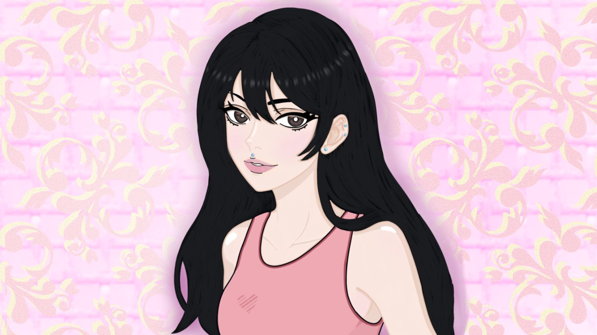
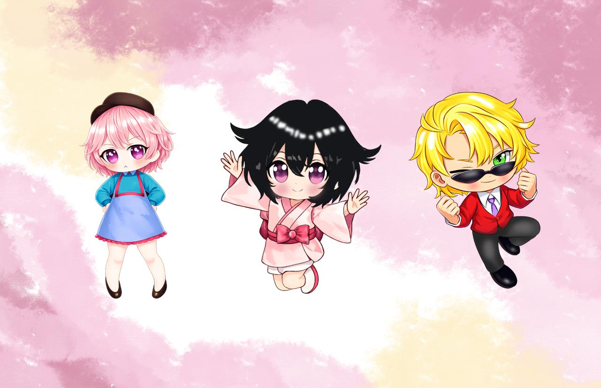
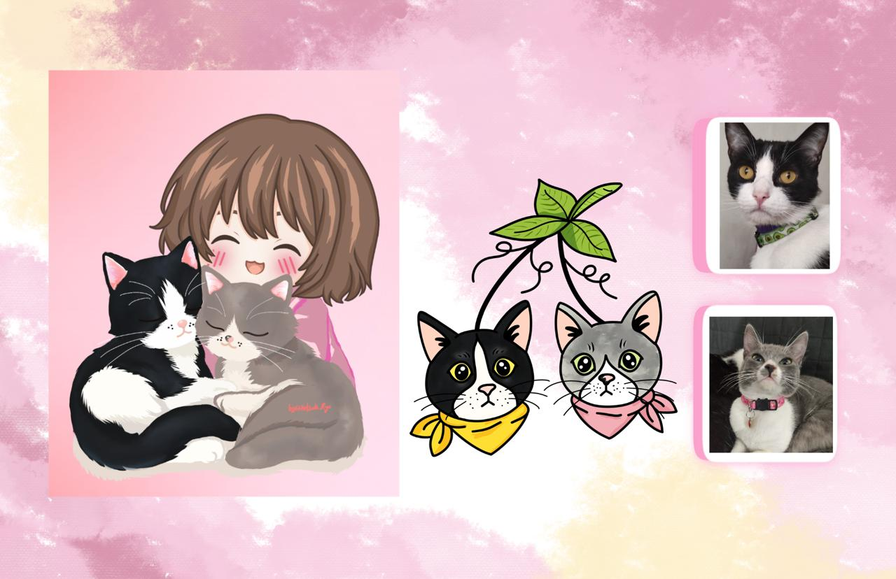
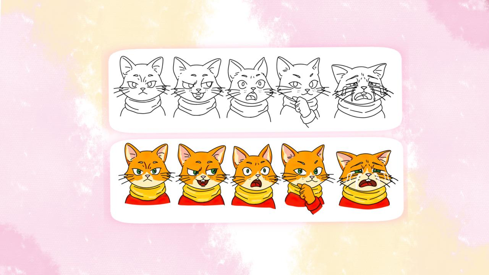
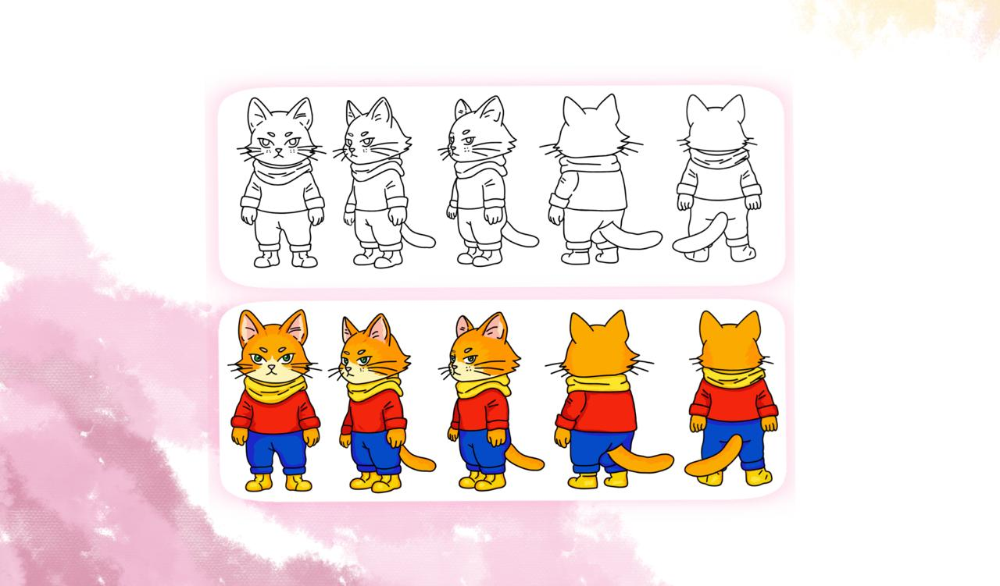

Artista e ilustradora
Hola, soy Paula, diseñadora gráfica e ilustradora apasionada por la creatividad y la expresión visual. Mi trabajo se enfoca en la creación de arte digital e ilustraciones personalizadas, donde busco transformar ideas, emociones y conceptos en piezas visuales únicas. Me inspiran profundamente las animaciones, el anime y el manga, estilos que han influido en mi forma de crear y contar historias a través de la ilustración. Disfruto realizar comisiones personalizadas en estilos como anime, chibi y manga, dando vida a personajes, momentos especiales e ideas que reflejen la esencia de cada persona. En cada proyecto combino detalle, color y narrativa visual para crear ilustraciones con personalidad y significado. Para mí, el diseño y la ilustración son más que una profesión: son una forma de conectar, comunicar y convertir la imaginación en arte.




